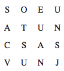

68. BÖLÜM
Albrecht Dürer mi?
Katherine, Adams Binası’nın bodrumunda Langdon ile birlikte koştururken, parçaları birleştirmeye çalışıyordu. A.D. demek Albrecht Dürer mi demek? On altıncı yüzyılın ünlü Alman oymabaskı ve resim sanatçısı, ağabeyinin en sevdiği ressamlardan biriydi. Katherine onun eserlerinden bazılarını biliyordu. Buna rağmen, Dürer’in kendilerine nasıl yardımcı olabileceğini tahmin edemiyordu. Her şeyden önemlisi, dört yüz yıl önce öldü.
Işıklı ÇIKIŞ tabelalarını takip ederlerken Langdon, “Dürer, simgesel açıdan mükemmel,” diyordu. “Rönesans zihniyetinin en büyük isimlerinden biri; sanatçı, filozof, simyacı ve yılmaz bir Antik Gizemler öğrencisi. Bugüne kadar Dürer’in eserlerindeki gizli mesajları kimse tam manasıyla anlayamadı.”
Katherine, “Bunlar doğru olabilir,” dedi. “Ama ‘1514 Albrecht Dürer’ ifadesi piramidin nasıl deşifre edileceğini ne şekilde açıklıyor?”
Kilitli bir kapıya geldiklerinde Langdon açmak için Bellamy’nin anahtar kartını kullandı.
Merdivenlerden yukarı hızla çıkarlarken Langdon, “1514 sayısı, Dürer’in çok özel bir eserini işaret ediyor,” dedi. Büyük bir koridora gelmişlerdi. Langdon etrafa göz attıktan sonra sol tarafı gösterdi. “Albrect Dürer 1514 sayısını, 1514 yılında tamamladığı en gizemli eserlerinden birinde -Melankoli I-51 saklamıştı. Bu, Kuzey Avrupa Rönesansı’nın yeni ufuklar açan eserlerinden biri olarak kabul edilir.”
Peter bir zamanlar Katherine’e antik gizemcilikle ilgili bir kitapta Melankoli I’i göstermişti ama gizlenmiş 1514 sayısını hatırlamıyordu.
Langdon heyecanlı bir sesle, “Bildiğin gibi Melankoli I, insanoğlunun Antik Gizemleri anlamakta çektiği sıkıntıyı tasvir eder,” dedi. “Melankoli I’deki sembolizm o denli karmaşıktır ki, Leonardo da Vinci’yi anlamak, onun yanında çocuk oyuncağı gibi kalır.”
Katherine birden durup Langdon’a baktı. “Robert, Melankoli I burada, Washington’da. Ulusal Sanat Galerisi’nde sergileniyor.”
Gülümseyerek, “Evet,” dedi. “Ve içimden bir ses bunun tesadüf olmadığını söylüyor. Galeri bu saatte kapalıdır ama müze müdürünü tanıyorum...”
“Unut bunu Robert, müzeye gidince neler olduğunu biliyorum.” Katherine, üzerinde bilgisayar duran bir masanın yanına yürüdü.
Pek mutlu görünmeyen Langdon, onu takip etti.
“Bunu kolay yoldan yapalım.” Görünüşe bakılırsa, sanat uzmanı Profesör Langdon, orijinal bir sanat eseri bu kadar yakınındayken interneti kullanmak konusunda etik açıdan ikilem yaşıyordu. Katherine masanın yanına gidip bilgisayarı açtı. Makine, sonunda açıldığında, Katherine bir sorun olduğunu fark etti. “Tarayıcı simgesi yok.”
“Kütüphanenin dahili bilgisayar ağına bağlı.” Langdon masaüstünde duran bir simgeyi işaret etti. “Bunu dene.”
Katherine, DİJİTAL KOLEKSİYON yazılı bir simgeyi tıkladı. Bilgisayarda yeni bir pencere açıldı ve Langdon tekrar işaret etti. Katherine onun seçtiği simgeyi tıkladı: AYRINTILI BİLGİ KOLEKSİYONU.
“‘Albrecht Dürer’ yaz.”
Katherine ismi yazdıktan sonra, arama düğmesine tıkladı. Birkaç saniye içinde ekranda küçük resimler belirmeye başlamıştı. Resimlerin hepsi aynı tarzda yapılmıştı; karmaşık siyah beyaz oymabaskılar görünüyordu. Dürer’in birbirine benzeyen düzinelerce oymabaskı yaptığı anlaşılıyordu.
Katherine alfabetik sıraya dizilmiş eserlerin listesine baktı:
Âdem ile Havva52
İsa’nın Çilesi53
Mahşerin Dört Atlısı54
TUTKU55
Son Akşam Yemeği56
İncil’den başlıklar gören Katherine, Dürer’in erken dönem Hıristiyanlık, simya, astroloji ve bilimin bir karışımı olan Mistik Hıristiyanlık ismindeki bir öğretiye inandığını hatırladı.
Bilim...
Laboratuvarının alevler içindeki görüntüsü Katherine’in zihninde canlanmıştı. Uzun vadede doğuracağı sonuçları pek düşünemiyordu, şu anda aklında sadece asistanı Trish vardı. Umarım kurtulmayı başarmıştır.
Langdon, Dürer’in Son Akşam Yemeği hakkında bir şeyler söylüyordu ama Katherine onu pek duymuyordu. Melankoli I için bir bağlantı görmüştü.
Fareyi tıklatınca, sayfa resim hakkındaki genel bilgilerle yenilendi.
Melankoli I, 1514
Albrect Dürer
(bakır oymabaskı)
Rosenwald Koleksiyonu
Ulusal Sanat Galerisi
Washington, D.C.
Sayfayı aşağı indirdiğinde, Dürer’in eserinin yüksek çözünürlüklü dijital bir resmi tüm ihtişamıyla karşısına çıktı.
Ne kadar garip olduğunu unutan Katherine, resmi şaşkınlık içinde inceledi.
Langdon, onu anladığını ifade eder şekilde güldü. “Esrarengiz olduğunu söylemiştim.”
Melankoli I’de, dev kanatlara sahip biri, akla hayale gelebilecek en aykırı ve biçimsiz nesnelerle -terazi, kemikleri sayılan bir köpek, marangoz gereçleri, kum saati, çeşitli geometrik cisimler, asılı duran bir çan, bir putto,(1) bıçak ve merdiven, çevrili taş bir binanın önünde, derin düşüncelere dalmış oturuyordu.
Katherine ağabeyinin, bu kanatlı figürün “insan dehasını” temsil ettiğini söylediğini belli belirsiz hatırlıyordu. Hâlâ aydınlanmaya ulaşamayan büyük düşünür, kederli bir ifadeyle çenesini eline dayamıştı. Bu büyük deha, insan zekâsının sembolleriyle -fen, matematik, felsefe, doğa, geometri, hatta marangozluk nesneleri- çevrelenmişti ama hâlâ gerçek aydınlanmaya götüren merdivenden yukarı tırmanamıyordu. Dâhi biri bile Antik Gizemleri anlamakta güçlük çekiyor.
Langdon, “Simgesel açıdan bu resim, insanoğlunun insani zekâyı tanrısal güce dönüştürmekteki başarısız girişimini temsil eder,” dedi. “Simyasal açıdan ise, kurşunu altına dönüştüremediğimizi gösterir.”
Katherine, “Pek de cesaret verici bir mesaj değil,” dedi. “Peki bu bize nasıl yardımcı olacak?” Langdon’ın bahsettiği gizli 1514 sayısını göremiyordu.
Langdon çarpık bir tebessümle, “Karmaşanın içindeki düzen,” dedi. “Tıpkı ağabeyinin söylediği gibi.” Elini cebine sokup, daha önce masonik şifreden alıp yazdığı harşeri çıkardı. “Şu anda bu harşerin bir anlamı yok.” Kâğıdı masanın üstüne yaydı.

Katherine tabloya baktı. Kesinlikle anlamsız.
“Ama Dürer bunu değiştirecek.”
“Peki bunu nasıl yapacak?”
“Dilbilim simyası.” Langdon bilgisayar ekranını işaret etti. “Dikkatli bak. Bu sanat eserinde gizli bir şey, on altı harşi tablodan bir anlam çıkartacak.” Bekledi. “Görebildin mi? 1514 sayısını ara.”
Katherine öğrencilik oynayacak havada değildi. “Robert, hiçbir şey görmüyorum; bir küre, bir merdiven, bir bıçak, çokyüzlü bir cisim, bir terazi? Pes ettim.”
“Bak! Arka planda. Meleğin arkasındaki binanın üstüne kazınmış. Çanın altında. Dürer sayılarla dolu bir kare yapmış.”
Katherine şimdi 1514’ü de içeren sayıların bulunduğu kareyi görmüştü.
“Katherine, piramidi deşifre edecek anahtar bu kare!”
Katherine, ona şaşkın gözlerle baktı.
Gülümseyen Langdon, “Bu herhangi bir kare değil,” dedi. “Bayan Solomon, bu sihirli bir kare.”